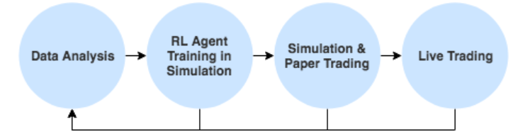

Définition du problème
Nous nous intéressons au problème d'optimisation de portefeuille : Nous disposons d'un certain capital que nous
pouvons investir pour acquérir certaines actions (dont le prix évolue dans le temps) et nous cherchons à maximiser
notre gain (utilité) sur un certain intervalle de temps.
Avant d'explorer ce problème du côté Machine / Reinforcement Learning, fixons d'abord quelques notions pour la suite.
- Un actif est un élément de valeur économique. Exemples d'actifs : liquidités, actions...
- Un portefeuille est un ensemble d'actifs financiers multiples, et est déterminé par deux choses :
Ses constituants (m actifs dont il est constitué) et un vecteur portefeuille dont la i-ème composante représente
le rapport entre le budget total investi dans l'actif 'i' et le budget total à disposition .
- La période de trading est divisée en périodes égales de durée T. Au début de chaque période,
notre agent de négociation réattribue le budget disponible entre les actifs, c'est-à-dire que le vecteur portefeuille est
mis à jour.
Le prix d'un actif fluctue à la hausse et à la baisse au cours d'une période, mais quatre prix importants
caractérisent le mouvement global d'une période, à savoir : l'ouverture, le plus haut, le plus bas et les cours
de clôture.
- Que veut-on vraiment faire ? Intuitivement, la réponse est : Réaliser le plus de bénéfices possibles.
Ceci est en partie vrai, et la métrique qui mesure purement cela est le PnL (Profit and Loss) :
C'est le bénéfice net de l'ensemble d'opérations executées, qui peut être positif ou négatif. Une alternative
serait le PnL non réalisé, qui correspond au bénéfice net que l'on obtiendrait en fermant immédiatement toutes
ses positions.
Ces deux fonctions de récompense optimisent naïvement le profit. En réalité, un trader peut vouloir minimiser le risque.
Une stratégie avec un rendement légèrement inférieur mais une volatilité significativement plus faible est préférable
à une stratégie très volatile mais seulement légèrement plus rentable. L'utilisation du ratio de Sharpe est un moyen
simple de prendre en compte le risque.
Approche supervisée et limitations
Avant d'examiner le problème du point de vue de l'apprentissage par renforcement, réfléchissons à comment nous
pourrions créer une stratégie rentable en utilisant une approche d'apprentissage supervisé.
Ensuite, nous expliquerons ce qui pose problème dans cette approche et pourquoi des techniques
de RL peuvent s'avérer plus efficaces.
L'approche la plus intuitive consiste à penser le problème comme prédiction des prix des actifs :
Si nous pouvons prédire que le marché augmentera, nous pouvons acheter maintenant et vendre une fois que
le marché aura évolué. Ou, de façon équivalente, si nous prévoyons une baisse du marché,
nous pouvons être short (emprunter un actif que nous ne possédons pas) et ensuite acheter une fois
que le marché a évolué.
Cela paraît très simple, mais en fait plusieurs questions se posent :
- Tout d'abord, quel est le prix que nous prévoyons réellement ? Il n'y a pas un seul prix auquel nous achetons :
Le prix final que nous payons dépend du volume disponible aux différents niveaux du carnet de commandes
et des frais que nous devons payer.
Une chose naïve à faire est de prédire le prix moyen, qui est le point médian entre le meilleur cours acheteur
et le meilleur cours vendeur. Cependant, il ne s'agit que d'un prix théorique, et non d'un prix auquel nous
pouvons exécuter des ordres, et il pourrait différer considérablement du prix réel que nous payons.
- La question suivante est celle de l'échelle de temps. Prévoyons-nous le prix de la prochaine transaction ?
Le prix à la seconde suivante ? Une minute ? Une heure ? Jour ? Intuitivement, plus nous voulons prédire l'avenir,
plus l'incertitude est grande et plus le problème de prédiction devient difficile.
Pour traduire ces limitations, considérons un exemple concret : Supposons que nous ayons un actif A avec une valeur initiale
de départ de P=10,000$. Supposons que nous puissions prédire avec précision que le prix passe de P à 10,050$ dans la minute
qui suit. Logiquement, cela signifierait que si nous pouvons réaliser un gain de 50$ en achetant à t=0 et en revendant
à t+1, sauf que ...
- Un problème peut survenir avec le volume recquis et le prix de vente de A pourrait passer de 10,000$
à 10,010$ dès que l'on achète la moitié d'une unité. Donc au final, nous aurons dépensé 10,005$ pour l'achat
d'une unité entière de A.
- Des coûts de transaction vont certainement survenir (comission du courtier par exemple). Elle sont souvent
de l'ordre de 0.3%, ce qui correspondrait ici à 30$
- En raison de la vitesse à laquelle le marché évolue, lorsque nous décidons de vendre à un prix donné,
il est possible que toute la quantité ne soit pas vendue à ce prix (comme lorsque nous voulions acheter).
Nous allons donc finir par vendre pour un total de 10.045$ par exemple.
Aussi, nous supposons que nous avons des coûts de transaction lors de l'opération de vente aussi,
toujours de l'ordre de 30$.
Au moment du bilan, combien d'argent avons-nous gagné ? -10005 - 30 - 30 + 10045 = -20 ! Au lieu de faire 50$,
nous avons perdu 20$.
Quelles leçons pouvons-nous tirer de cet exemple ?
- Afin de faire des bénifices à partir d'une simple stratégie de prédiction des prix, nous devons prédire
des mouvements de prix relativement importants sur de plus longues périodes de temps, ce qui en soit
représente un problème très difficile (plus la période est longue plus l'incertitude est grande).
- Un autre problème avec l'apprentissage supervisé : Nous ne récupérons pas / n'apprenons pas une stratégie
de trading.
Dans l'exemple ci-dessus, nous avons acheté parce que nous avions prédit que le prix augmenterait,
et il a en effet augmenté. Tout s'est déroulé comme prévu. Mais qu'aurions nous fait si le prix avait baissé ?
Vendre ou Garder l'actif et attendre de voir son évolution ultérieure ?
Que se serait-il passé si le prix avait augmenté un peu, puis redescendu ? Que se serait-il passé si nous n'avions pas été certains
de la prédiction, par exemple 55 % en hausse et 45 % en baisse ? Comment choisir le seuil pour passer un ordre?
Le modèle supervisé n'apporte aucune information par rapport à toutes ces situations, il ne peut fournir que des probabilités ou des
sorties binaires ici.
- En raison de la vitesse à laquelle le marché évolue, lorsque nous décidons de vendre à un prix donné,
il est possible que toute la quantité ne soit pas vendue à ce prix (comme lorsque nous voulions acheter).
Nous allons donc finir par vendre pour un total de 10.045$ par exemple.
Aussi, nous supposons que nous avons des coûts de transaction lors de l'opération de vente aussi,
toujours de l'ordre de 30$.
A partir de l'analyse de l'exemple précédent et les limitations observées du modèle supervisé, nous comprenons que
nous avons besoin de plus qu'un simple modèle de prédiction de prix : Nous avons besoin d'une politique (stratégie)
fondée sur des règles qui tient compte des prédictions de prix (qui ne deviennent donc qu'une sous partie du modèle global)
et qui décide ce qu'il faut faire : Passer une commande, ne rien faire, annuler une commande, etc.
Comment en arriver à une telle politique ? Comment optimiser les paramètres des politiques et les seuils
de décision ? La réponse à cela n'est pas évidente, et beaucoup de gens utilisent l'heuristique simple ou l'intuition
humaine. C'est en fait ici qu'intervient toute l'utilité d'un modèle basé sur l'apprentissage par renforcement.
Modélisation par Reinforcement Learning
Quand nous abordons un problème de l'angle du supervisé, nous nous intéressons à la variable de sortie et les variables
qui vont être utilisées pour prédire cette sortie (prédictors) et nous cherchons le mapping désiré. En RL, il va falloir
comprendre à quoi correspond chaque élèment de notre problème pour voir s'il s'adapte bien au framework de RL.
Dans le cas présent, voici ce que ça donne :
- Agent : L'agent est notre agent de négociation. Vous pouvez considérer l'agent comme un trader humain
qui ouvre l'interface graphique d'une bourse et prend des décisions de trading basées sur l'état actuel de la bourse
et de son compte.
- Environnement : Ce qui est important à noter, c'est qu'il y a beaucoup d'autres agents,
tant humains qu'algorithmes de trading automatiques. Ces agents négocient sur le même marché.
Supposons un instant que nous agissons à une échelle minutaire i.e : Nous passons l'action, attendons une minute,
obtenons un nouvel état, prenons une autre mesure, et ainsi de suite. Lorsque nous observons un nouvel état,
ce sera la réponse de l'environnement du marché, ce qui inclut la réponse des autres agents.
Ainsi, du point de vue de notre agent, ces agents font aussi partie de l'environnement.
On ne peut pas les contrôler.
Pour simplifier, supposons que nous interagissons avec un environnement complexe unique
qui inclut le comportement de tous les autres agents.
- Etat : Dans le cas d'une négociation en bourse, nous n'observons pas l'état complet de
l'environnement. Par exemple, nous ne connaissons pas les autres agents qui se trouvent dans l'environnement,
leur nombre, leur actif, etc. Il s'agit donc d'un processus de décision de Markov partiellement observable.
Ce que l'agent observe n'est pas l'état actuel S_t de l'environnement, mais une dérivation de celui-ci.
Dans notre cas, l'observation à chaque étape t est simplement l'historique de tous les événements
d'échange reçus jusqu'à l'heure t.
- Espace d'actions : Dans l'apprentissage du renforcement, nous faisons une distinction entre
les espaces d'action discrets (finis) et continus (infinis).
Dans le problème abordé ici, nous avons deux choix de complexité bien différente.
L'approche la plus simple serait d'avoir trois actions : Acheter, conserver et vendre. Cela fonctionne,
mais cela nous limite à passer des ordres au marché et à investir une somme d'argent déterministe à
chaque étape. Le prochain niveau de complexité serait de laisser notre agent apprendre combien d'argent
investir, par exemple, en fonction de l'incertitude de notre modèle. Cela nous mettrait dans un espace
d'action continu, car nous devons décider à la fois de l'action (discrète) et de la quantité (continue).
- Fonction de récompense : Nous allons choisir ici une des fonctions de mesure de l'utilité de l'agent
telles qu'introduites dans la définition du problème.
Maintenant que nous savons qu'on peut formuler le problème d'optimisation de portefeuille comme un problème
d'apprentissage par renforcement peut être utilisé dans le trading, comprenons pourquoi nous voulons l'utiliser
plutôt que des techniques supervisées.
Optimisation de bout en bout Dans l'approche traditionnelle d'élaboration de stratégies, nous devons
franchir plusieurs étapes, avant d'en arriver à la mesure à laquelle nous nous intéressons réellement.
Par exemple, si l'on veut trouver une stratégie avec un retrait maximal de 25 %, il faut former un modèle supervisé,
élaborer une politique fondée sur des règles à l'aide du modèle, tester la politique et optimiser ses
hyperparamètres, et enfin évaluer sa performance par simulation.
L'apprentissage par renforcement permet une optimisation de bout en bout et maximise les
récompenses (potentiellement retardées). En ajoutant un terme à la fonction de récompense, nous pouvons par exemple
optimiser sans avoir besoin de passer par des étapes séparées. Par exemple, vous pourriez imaginer donner
une récompense négative importante chaque fois qu'un retrait de plus de 25 % se produit, forçant l'agent
à chercher une autre stratégie.
<
Stratégies apprises Au lieu d'avoir besoin de coder manuellement une politique basée sur des règles,
La force du RL est le fait que l'on
append directement une politique. Il n'est pas nécessaire pour nous
de spécifier des règles et des seuils tels que "acheter quand vous êtes sûr à plus de 75% que le marché va monter".
C'est ce qui est prévu dans la politique RL, qui optimise la métrique à laquelle nous nous intéressons.
Nous supprimons une étape complète du processus d'élaboration de la stratégie ! Et parce que la politique peut
être paramétrée par un modèle complexe, tel qu'un réseau de neurones profond, nous pouvons apprendre des politiques
qui sont plus complexes et plus puissantes que n'importe quelles règles qu'un trader humain pourrait imaginer.
Au final, développer des stratégies de trading en utilisant RL ressemble donc à ceci :
